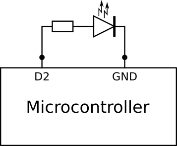

Na dzisiejszych zajęciach będziemy programować mikrokontroler.
Mikrokontroler to mały układ scalony, który (zazwyczaj) ma w sobie zintegrowane wszystkie komponenty potrzebne do wykonywania małych programów. Tzn: processor, pamięć stałą (na program), pamięć operacyjną (na dane), zegar, elementy wejścia wyjścia. Wpisanie programu do pamięci stałej mikrokontrolera nazywamy “programowaniem” mikrokontrolera i najczęściej odbywa się przez pobudzenie wybranych pinów układu scalonego w zadany sposób. Do tego używamy “programatora”.
Na tych zajęciach użyjemy płytkę prototypową kompatybilną z Arduino. Urządzenia takie mają zintegrowane na jednej płytce: mikrokontroler i interfejs USB, a dodatkowo wgrany mają fabrycznie tak zwany “bootloader”. Bootloader pełni rolę programatora, pozwalając wgrać programy do pamiecy stałej mikrokontrollera przez interfejs szeregowy. Bootloader Arduino stał się tak popularny, że wiele innych firm produkuje płytki z mikrokontolerami z wgranym ich bootloaderem. Pozwala to na programowanie wszelkich takich płytek przy pomocy tego samego zestawu narzędzi.
Dziś będziemy używać narzędzia Arduino IDE.
Programy dla Arduino mają dwa komponenty: setup() w
której inicjalizujemy stan mikrokontrolera i wszystkie zmienne, i
loop() która jest powtarzana w nieskończoność i wykonuje
zazwyczaj zawiera gówną logikę programu. Można sobie wyobrazić, że
mikrokontroler będzie wykonywał następujący program:
PinyNasza płytka ma piny typu General Purpose Input Output (GPIO).
Oznacza to, że możemy ustawić je w różne stany służące do odczytu danych
(input) i wysyłania danych (output). Do ustawiania stanu służy funkcja
pinMode(pin, typ). Dziś użyjemy dwóch typów:
OUTPUTOUTPUT pozwala na ustawianie wyjscia na pinie na
logiczne 0 (LOW) i 1
(HIGH). Zero to samo co uziemienie (ground), a jedyna to
napięcie operacyjne układu (u nas 3V). Jesli podlaczymy taki pin (np. 2)
do lampki (jak na rysunku), bedziemy mogli ja zapalac i gasic ustawiajac
pin za pomoca digitalWrite(2,HIGH); i
digitalWrite(2,LOW);.

Jesli zas do takiego pinu (np 10) podlaczymy buzzer (jak na rysunku)
i uzyjemy komendy tone(10,freq), uklad zacznie na zmiane
podawac 0 i 1 z czestotliwoscia freq, wydajac dzwiek.
INPUT_PULLUPINPUT_PULLUP pozwala na sprawdzanie na pinie czy jest on
podłączony (LOW) czy nie (HIGH) do zera
(ground). Jesli do takiego pina (np 3) podlaczymy przelacznik, a jego
drugi styk podlaczymy do ziemi, bedziemy mogli wykryc czy przelacznik
jest nacisniety sprawdzajac czy digitalRead(3) == LOW.
Pierw wybróbujemy buzzer. Buzzer to mały piezoelektryczny głosnik
zaprojektowany do wydawania tonów. Możemy podłączyć jedno wyjście
buzzera do zera (GND) a drugi do pinu 10
(D10). Możemy wtedy użyć komendy
tone(pin, frequency, duration), żeby wysłać na pinie
kwadratową falę o zadanej czestotliwości, i funkcji
delay(duration) by poczekać zadany czas.
void setup() {
pinMode(10, OUTPUT);
}
void loop() {
tone(10, 262, 500); // C4 - 261.626 Hz
delay(1000);
}Dodatkowo możemy zapalić zintegrowaną diodę LED przy pomocy
digiralWrite(...):
void setup() {
pinMode(LED_BUILTIN, OUTPUT);
pinMode(10, OUTPUT);
}
void loop() {
tone(10, 262, 500); // C4 - 261.626 Hz
delay(1000);
digitalWrite(LED_BUILTIN,HIGH);
delay(1000);
digitalWrite(LED_BUILTIN,LOW);
}Możemy teraz podłączyć przyciski. Każdy przycisk ma 4 porty, dwa styki przełącznika i dwa styki LED. Dioda LED jest w obudowie zlutowana w opornikiem limitującym natężenie, wiec nie bedziemy potrzebować dodatkowych komponentów. Nigdy nie należy podłączać diody LED bez rezystora.
W każdym przycisku jeden styk przełącznika i jeden styk LED
podłączymy do zera (GND) a pozostały styk przełącznika
podłączymy do pinu w stanie INPUT_PULLUP, a styk LED do
OUTPUT. Ostatecznie będziemy mieli 4x2 stykow podłączonych
do pinów od D2 do D9, i łańcuszek styków
podłączonych do zera.Piny 2,4,6 i 8 podłączymy do LEDow w przyciskach,
zaś 3,5,7 i 9 podłączymy do przycisków. Pin 10, jak wczesniej, użyjemy
do buzzera.
Na początek ustawimy stany wszystkich pinów które będziemu używać:
void setup() {
pinMode(LED_BUILTIN, OUTPUT);
pinMode(2, OUTPUT);
pinMode(3, INPUT_PULLUP);
pinMode(4, OUTPUT);
pinMode(5, INPUT_PULLUP);
pinMode(6, OUTPUT);
pinMode(7, INPUT_PULLUP);
pinMode(8, OUTPUT);
pinMode(9, INPUT_PULLUP);
pinMode(10, OUTPUT);
}
void loop() {
}Teraz możemy obsłużyć przyciski:
void loop() {
for(int i=0;i<4;i++) {
int switch_pin = i*2+3;
int led_pin = i*2+2;
if (digitalRead(switch_pin) == LOW) {
digitalWrite(led_pin,HIGH);
} else {
digitalWrite(led_pin,LOW);
}
}
}Użyj funkcji tone(pin, frequency) i
notone(pin) by wydać dzwięk przy naciśnięciu przycisku.
Stwórz tablice częstotliwości które chcesz zagrać.
Przy pomocy digitalRead(switch_pin) == LOW możemy wykryć
czy dany przycisk jest wciśnięty. Zadeklaruj funkcję
keydown(k):
void keydown(int k) {
int led_pin = k*2+2;
digitalWrite(led_pin,HIGH);
delay(1000);
digitalWrite(led_pin,LOW);
}Zmodyfikuj loop tak, by funkcja keydown
została wywoła raz w momencie naciśnięcia
przycisku.
Główne zdanie na dziś polega na napisaniu małej gry: - Wygeneruj
losową sekwencję 5 przycisków, użyjąc funkcję random(4), i
umieść ją w tablicy. - Odtwórz sekwencje podświetlając odpowiednie
przyciski i wydając tony - Gra polega na tym by użytkownik powtóżył
sekwencję. Gdy sie pomyli, zagraj smutną melodie, a gdy dojdzie do końca
sekwencji poprawnie, zagraj fanfary.
Gdy wszystko będzie działać, zmodyfukuj kod tak, by sekwencja zaczynała od jednego elementu i zwiekszała się za każdym razem gdy użytkownik poprawnie ją wykona.
Spróbuj napisać następującą grę, w której zapala się losowy przycisk i trzeba go nacisnąć zanim zgaśnie. Każdy następny przycisk zapala się na coraz krótrzy czas i odstępy po miedzy nimi maleją.
Zmodyfikuj powyższą grę tak, by podświetlała się dowolna kombinacja przycisków i trzeba było nacisnąć je wszystkie zanim zgasną.